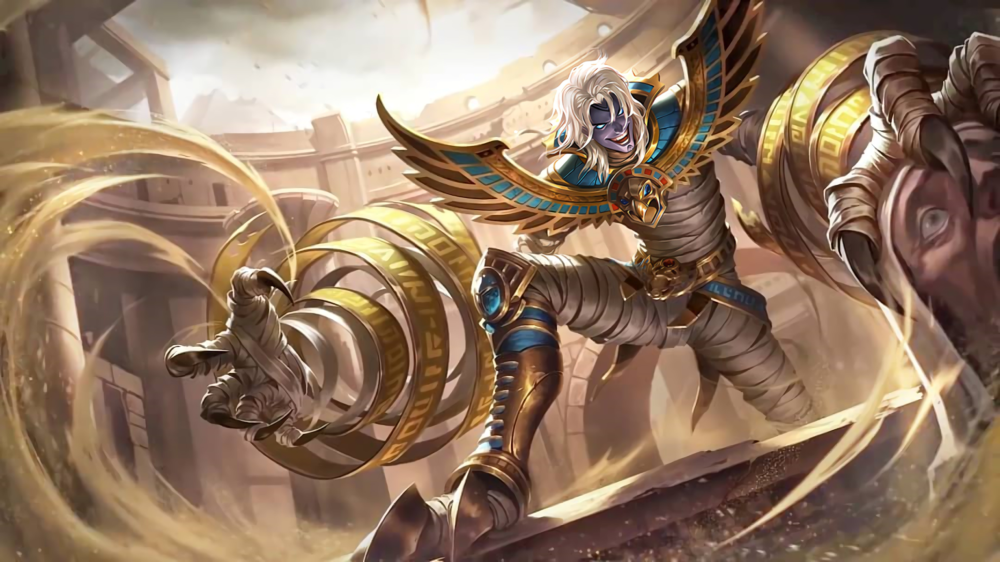
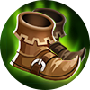
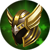
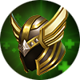

|  | |
|
Хуфра
|
|
|
Хуфра - герой танк. Его особенностью является множество навыков с элементом контроля
|
|
"Пусть мое правило,добавит веселья, в этот скучный мир"
-Хуфра |
 |
Дата выхода: - 2 апреля 2019 года |
|
| История героя: | |
| Хуфра был правителем небольшого города, который находился в Пустыне. Его правительство было очень жестоким, все знали его как тирана, который отличался своей скупость и хладнокровием. Обладая таким характером, он постоянно воевал, чтобы расширить свои владения. Так пытаясь завоевать Монийскую империю, он искал помощи в астрологов. В это время он повстречал Эслору, которая влюбилась в него. Чтобы помочь Хуфре исполнить его мечту, она наделила его магической силой. Ведя войны по всей Западной пустыне и стремясь покорить все земли Рассвета, хуфра желал получить могущество, которое было недоступно простым смертным. Поняв что натворила, Эслора решила избавить своего любимого от человеческой ненависти. Так однажды ночью, она пришла к правителю, обняла и начала накладывать проклятие, почувствовав, как силы покидают его, Khufra попытался вырваться, однако магия девушки не давала ему это сделать. Заточив Хуфру в вечный сон, она построила прекрасный склеп, где похоронила любимого. Спустя сотни лет, произошло то, что никто не мог предвидеть, война Сфер, пробудила Хуфру. Вырвавшись с заточения, он решил довести свою мечту до конца. Покорить все Земли Рассвета. | |
Слабые и сильные стороны: Слабые:
Cильные:
Сборка героя:

 


Эмблемы
Выбор линии:
Так, как Хуфра - танк, в начале и до конца матча, он должен охранять своего главного дамагера
Пассивное: Заклинание проклятия
Хуфра активирует заклинание проклятия, оставленное Эсмеральдой, чтобы увеличить дальность следующей базовой атаки, нанося (+120% общей физической атаки) плюс 8% от максимального здоровья единиц магического урона. Дополнительно, Хуфра восстанавливает 12% своего максимального здоровья. Каждый раз, когда Хуфра использует свои навыки для управления вражескими героями, время восстановления заклинания проклятия уменьшается на 4 секунды

1 Навык: Месть тирана
Хуфра натягивает повязку на руки, чтобы запустить себя в указанном направлении, нанося 50 (+1,5% физической атаки +10% макс ОЗ) единиц физического урона всем вражеским юнитам на пути. При перемещении на самое дальнее расстоянии или встрече с первым вражеским героем, Хуфра немедленно остановится и нанесет 50 (+1.5% дополнительной физической атаки +10% макс ОЗ) единиц физического урона врагам поблизости, а затем оглушает их.

2 Навык: Прыгающий мяч
Хуфра использует бинт, чтобы обернуться в волшебный прыгающий шар, увеличивая свою физическую и магическую защиту на 75%. Враги, пытающиеся использовать навыки перемещения возле Хуфры, будут оглушены. Каждый раз, когда магический прыгающий шар ударяется о землю, он наносит 30 (+1,5% дополнительной физической атаки + 8% максимального здоровья противника) магического урона врагам поблизости и уменьшает их скорость движения

Ультимативная способность: Ярость тирана
Хуфра стягивает все вражеские цели вокруг себя , нанося 300 (+100% общей физической атаки) единиц физического урона и замедляя их на 1,25 секунды. Если враги ударятся о стену, им будет нанесен дополнительный физический урон, равный 150% урона от этого навыка, также они будут оглушены на 1 секунду.

|